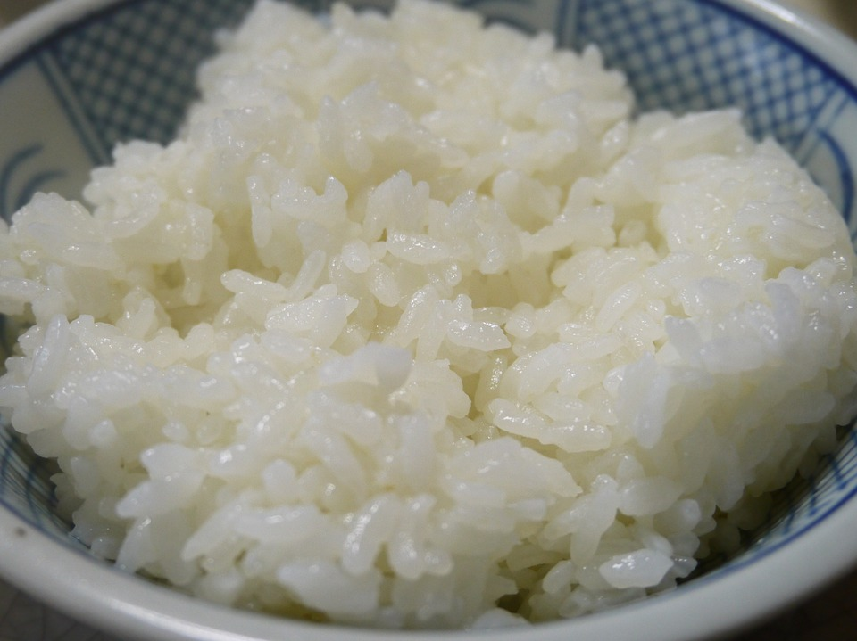
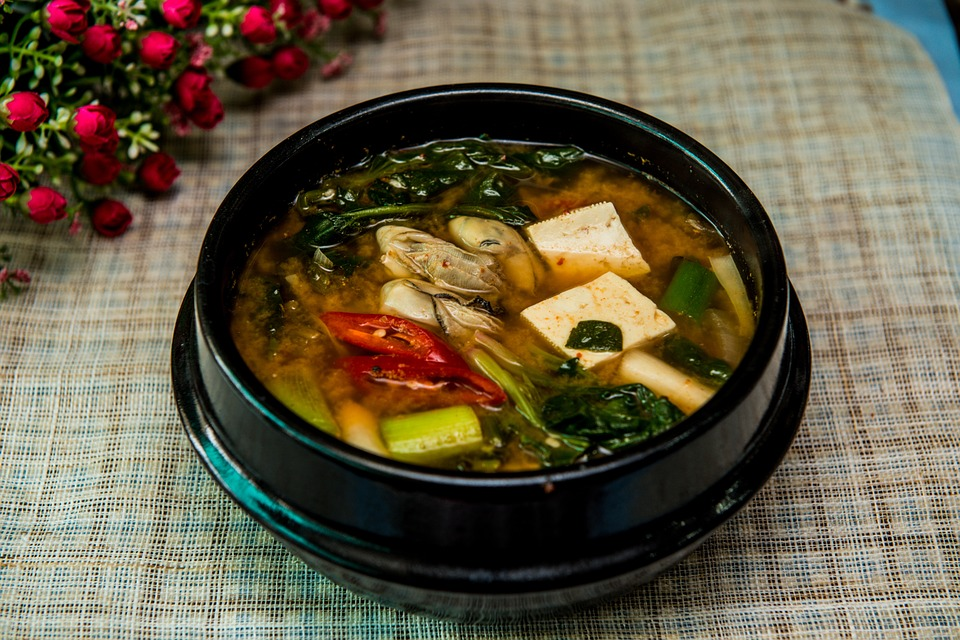
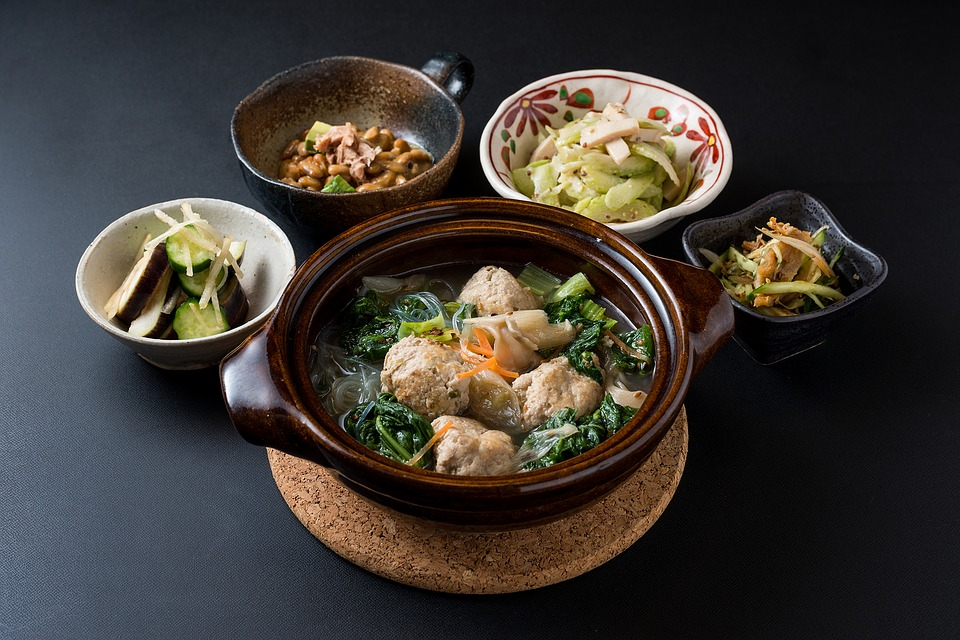
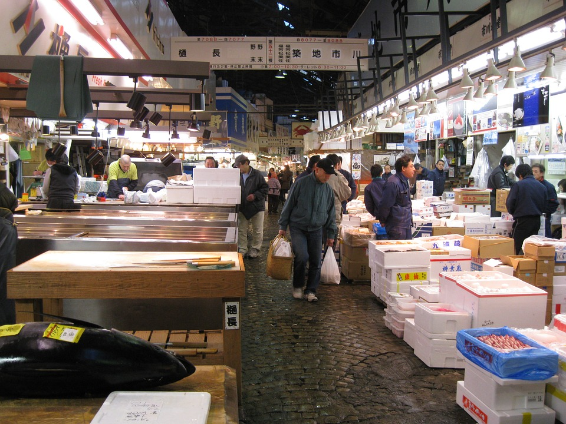
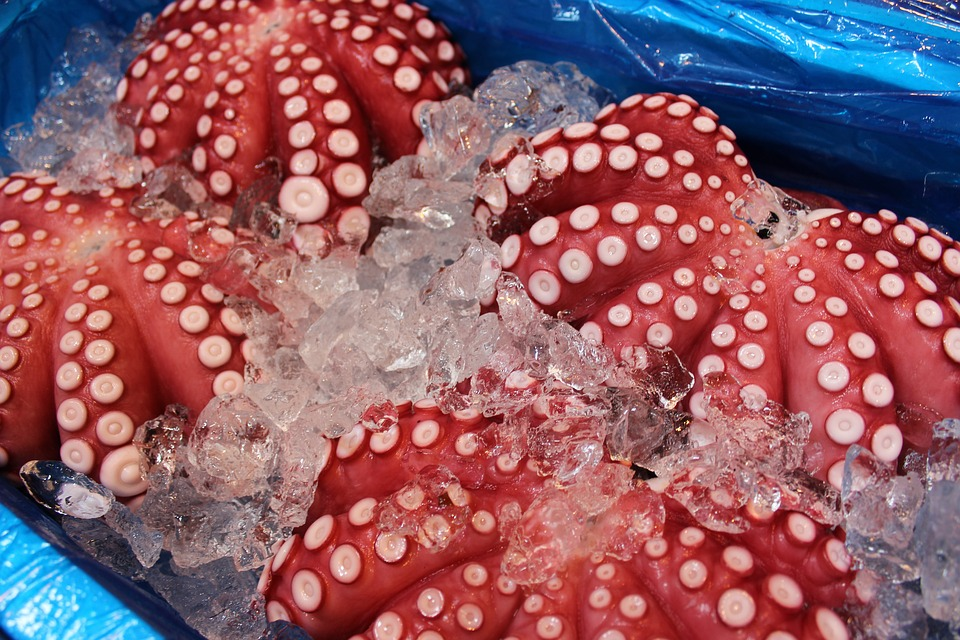
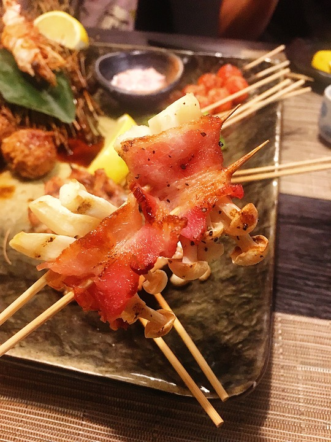
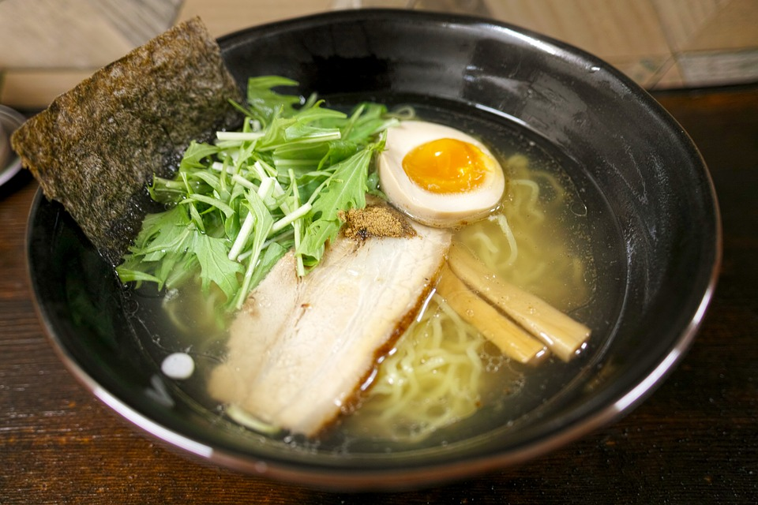

JAPANESE FOOD
What does a Japanese meal consist of?
In Japan, meals usually consist of four elements:
- Gohan, or a bowl of rice is a staple in a typical Japanese meal. 
- Along with a bowl of rice, Japanese people also include a miso soup with their meal. 
- Pickled vegetables also known as tsukemono is a side dish Japanese people love to add to their meals. 
- Last but not least, protein such as fish or meat is apart of the meal. The Japanese take great pride in their seafood.

How much do the Japanese love seafood?
If there's anything anyone knows about Japanese cuisine, it is about their world renowned dish, sushi. Sushi came to be during the second century in Southeast Asia. It is believed that it was invented by people because people sought ways to keep meat fresh without having to refrigerate it. After curing the meat or fish, they would wrap it in rice in order to preserve its freshness. They allowed it to sit for months When they felt the protein was ready, they would throw out the rice and consume the protein.
The idea spread like wildfire throughout China and Japan. When the Japanese got a hold of the idea, they cured their meat and/or seafood with wine or sake. Much later, people added vinegar to the recipe to expedite the fermentation of the protein. Adding vinegar to the protein eliminated having to wait months for the meat to be cured.
It wasn't until the 1820s that chefs started using raw fish in their sushi; this style of sushi is called edo. This is the kind of sushi that most Japanese restaurants sell. A hundred years after this development, chefs began placing raw fish on top of rice which is the form of sushi most consumers of the cuisine are most familiar with. This style is called nigiri-sushi.

Due to its ever increasing popularity, global trade and mass production, sushi is available in a lot of places throughout the world outside of Japan. If you would like to try this dish, you don't have to fly all the way to Japan to try it. You can probably find a place nearby where you live that sells it; my local supermarket does!

The Japanese absolutely love seafood! In fact, the world's largest seafood market resides in the heart of Tokyo, Tsukiji Fish Market. Here, five million pounds of seafood are bought daily on average. One of the market's main attractions besides their wide array of seafood options is their live tuna auctions which occur every day at 5 am. The auctions are free for anyone to attend however it is required that attendees arrive to Tsukiji by 4 am when free tickets are distributed to the public. Over time, the auctions have become a major tourist attraction.
 What are some other Japanese dishes besides sushi?
- Yakitori is a dish that can be found throughout Japan. Its appearance is like that of a kabob, skewered meat that varies from chicken small intestines to chicken thigh. 
- Another Japanese dish that Americans are familiar with is ramen! Ramen is a dish that consists of noodles that are bathing in a soy-flavored chicken broth (can vary). The noodles sit under a variety of toppings such as chopped scallion, eggs and spinach. 
Final thoughts:
Food is king in Tokyo. Tokyo is home to the most Michelin-starred restaurants surpassing that of Paris. 14 of Tokyo's restaurants have been awarded with 3 Michelin stars. If you want to eat at some of the best restaurants in the world, you may have to spend a pretty penny but Tokyo is indeed a place you need to go to.
Like NYC has bodegas (also known as delicatessens) scattered throughout the city where patrons can grab a quick bite to eat or some household items, Tokyo has vending machines. The kinds of vending machines you will come across in Tokyo are reminiscent of your typical NYC bodega; you can purchase anything from fresh eggs and milk to a steaming hot cup of coffee or a bowl of ramen. The options are truly endless.